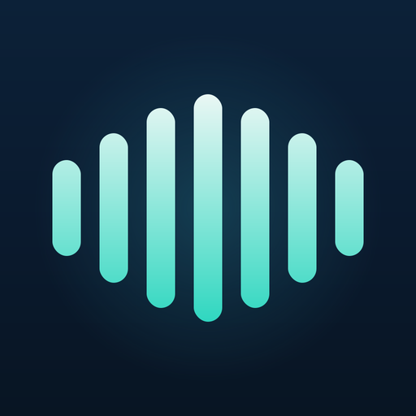

Debrief Notes — On-Device AI Voice Notes
2025 — In review
Self-initiated
iOS · SwiftUI · Private by design
A local-first iOS app that records, transcribes, and summarises voice notes entirely on the device — no servers, no account, no cloud. Speech recognition and LLM summarisation both run offline. I extracted the AI layer into a reusable, open-source Swift package.
- → Fully on-device: recordings, transcripts, and summaries never leave the phone
- → On-device ASR (Apple SpeechAnalyzer + WhisperKit fallback) and Llama 3.2 3B summarisation via MLX-Swift
- → Open-sourced the AI service layer as a MIT-licensed Swift package (AIServiceKit)
- → Built on Swift 6 strict concurrency, SwiftUI, and SwiftData, iOS 18+
SwiftUI
SwiftData
Swift 6
MLX
WhisperKit
On-device AI